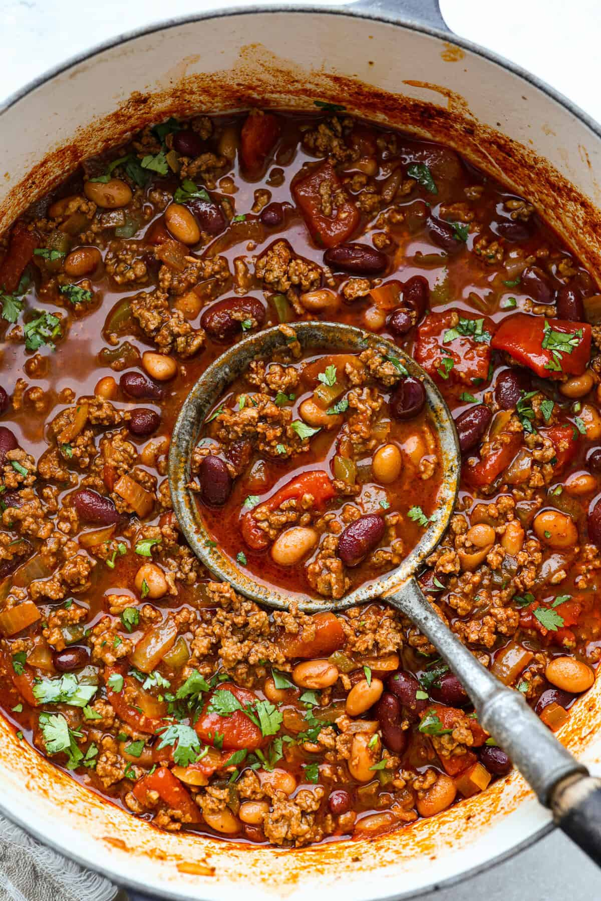

Chili
Home

Description
This deep and hearty stew will fill you up!
Ingredients
- Beans
- Tomotoes
- Beef Broth
- Onion, Garlic, and pepper
- Ground Beef
- Spices
Instructions
- Throw your beef into the pot and brown it
- Throw your spices into the pot and mix up the beef
- Throw in your chopped veggies
- Throw in tomatoes and beef broth
- Cook on low for 45 minutes till the flavors deepen